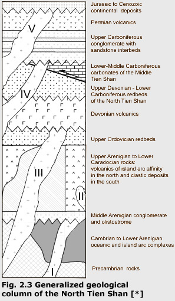

The modern pattern of the Central Tien Shan was generated in the Late Oligocene-Pleistocene time. It includes serial parallel latitudinal strike ranges pided by basins. In major intermontane basins (Issyk-Kul, Naryn, Atbashy with length to 250-380 km, width to 40-80 km) the surface of Paleozoic bedrocks immersed on depth of 3-4 km below than sea level. They are filled by Cenozoic deposits up to 4-5 km of thickness. The western boundary of the Central Tien Shan is the Talas-Fergana Fault, the eastern boundary is traced along the Chan-Tengri Peak meridian where all the mountain range system unites into the unified plexus of mountains. In the western part of the East (Chinese) Tien Shan the Halyk-Too Range adjoins to this plexus of mountains (Fig. 2.1).
Tectonic zoning within the Central Tien Shan was caused by Paleozoic orogeny and is characterized by north-north-eastern strike. The Tarim and the Late Tien Shan represent continental massifs that surround from the south and the north appropriately the South Tien Shan Belt formed in the Middle Carboniferous as a result of close of the Turkestan Paleoocean (Fig. 2.2). The North Tien Shan tectonic zone (NTZ) and its counterparts in Kazakhstan are major units in the central part of the Ural-Mongol Belt.
The NTZ trends E-W parallel to the modern mountains for about 500 km in the North Kyrgyzstan and the South Kazakhstan; the eastward continuation of this zone into the Chinese Tien Shan is ambiguous (Mazarovich et al., 1995). In the west, the zone can be traced into the Stepnyak-Betpakdala zone in Kazakhstan (Fig. 2.2). Despite lateral variation in structure and sections, the Stepnyak-Betpakdala zone and the NTZ are regarded as a single first-order tectonic unit about 2000 km in length (Nikitin, 1972; 1973).
In the NTZ, shelf and continental slope complexes of Precambrian age outcrop as disrupted blocks and thrusts, and their original relationship is unclear. Cambrian to Lower Arenigian rocks include subduction-related volcanics, marginal sea, rift, and passive margin complexes which are regarded as the remnants of a basin with oceanic crust - the Terskey ocean or marginal sea (Mikolaichuk et al., 1997; Degtyarev and Mikolaichuk, 1998). The closure of this basin by the Early-Middle Arenigian boundary resulted in thrusting and deformation of all older complexes and some granite intrusions.
Middle Arenigian conglomerate and olistostromes overlap the Cambrian-Early  Arenigian complexes with a major angular unconformity (Fig. 2.3). A thick pile of differentiated volcanics of the Late Arenigian to the Early Caradocian age accumulated in the northern and central parts of the NTZ; this series is considered a counterpart of modern active continental margins (Lomize et al., 1997). Along the southern boundary of the NTZ, volcanics are replaced by terrigenous and volcanic-clastic rocks of the same age, which are locally intruded by relatively small bodies of acid to intermediate magmatic rocks and conformably covered by Upper Caradocian red sandstones containing siltstone and limestone interbeds. The Ordovician succession is intruded by numerous large granite bodies in the Late Ordovician and smaller granites in the Silurian (Mikolaichuk et al., 1997) . Due to the lack of Silurian rocks above the NTZ, the age of deformation here cannot be constrained better than Pre-Early Devonian. A major angular unconformity, however, is present at the Ordovician-Silurian boundary in the Stepnyak-Betpakdala zone of Kazakhstan (Nikitin, 1972; 1973), and it is likely that the NTZ was strongly deformed at about this time too. On a broader scale, geological data indicate that the Stepnyak-Betpakdala zone and the NTZ were welding to other major blocks of Kazakhstan during the Silurian (Mossakovsky et al., 1993).
Lower-Middle Devonian basic and acid subaerial volcanics in the North Tien Shan reside with a major unconformity with Lower Paleozoic rocks (Fig. 2.3).In the Late Devonian-Middle Carboniferous time a carbonate platform was existing in the southern part of the Middle Tien Shan (Fig. 2.2); the carbonate platform complex is laterally traced over 1000 km (Alexeiev et al., 2000). A deep basin filled by terrigenous rocks appeared between the carbonate platform and the NTZ in the Late Tournaisian. The northern part of the basin which onlaps the NTZ is filled by Upper Visean to Lower Bashkirian redbeds (Mikolaichuk et al., 1995).
The carbonate platform complex was thrusted onto the NTZ in the Middle Bashkirian time. The thrusts are sealed by Upper Carboniferous conglomerates with subordinate sandstone and siltstone, which in their turn are overlain with erosional unconformity and basal conglomerate by Permian volcanics (Fig. 2.3). A prominent angular unconformity between Permian and Lower Jurassic rocks indicates strong deformation in the Lattermost Paleozoic and/or the Triassic. Finally, the entire Tien Shan was affected by Alpine tectonism. It should be stressed that the intensities of deformation events are laterally variable, and it is often difficult to evaluate the magnitudes of each deformation at a locality (Bazhenov et al., 2003).
[*] Saw-toothed lines, angular unconformities; thick solid line, thrust between terrigenous rocks of the North Tien Shan in the north and carbonates of the Middle Tien Shan in the south. Cross-filling, granite intrusions of various age: I, Early Ordovician; II, Middle Ordovician; III, Late Ordovician and Early Silurian; IV, Middle Carboniferous; V, Permian. Note that this column is schematic, and there are minor lateral facies changes (modified after Bazhenov et al., 2003).
Reference
- Alexeiev D.V., Cook H.E., Mikolaichuk A.V. and Dzhenchuraeva A.V. (2000) Upper Devonian through Lower Permian Carbonates in the Middle Tian-Shan of Kyrgyzstan:New Data on the Evolution of Passive Margin Carbonate Platforms of the Kazakhstania Paleocontinent // Permo-Carboniferous Carbonate Platforms and Reefs, El Paso, Texas. May 15-16.
- Bazhenov M.L, Collins A.Q., Degtyarev K. E., Levashova N. M., Mikolaichuk A. V. Pavlov V. E. and Van der Voo R. (2003) Paleozoic northward drift of the North Tien Shan (Central Asia) as revealed by Ordovician and Carboniferous paleomagnetism // Tectonophysics 366, p. 113
- Lomize, M.G., Demina, L.I., Zarschicov, A.V., (1997). The Kyrgyz-Terskey paleoceanic basin in the Tien Shan. Geotectonics 31 (6), 463-482. pp. 486-640.
- Mazarovich, O.A., Barskov, I.S., Borisenok, V.I., Lomize, M.G., Sobolev, R.N., Filatova, L.I., (1995) Northern Sinjiang in system of Central Asia Paleozoids // MOIP Bull. 10 (6), pp.3–21. (in Russian).
- Mikolaichuk A.V., Kurenkov S.A., Degtyarev K.E., Rubtsov V.I. (1997) Northern Tien Shan Main Stages of Geodynamic Evolution // Geotectonics, Vol. 31, No 6. P.445- 462.
- Mossakovsky, A.A., Ruzhentsev, S.V., Samygin, S.G., Kheraskova, T.N., (1993). Geodynamic evolution of the Central-Asia folded belt and history of its development. Geotectonics 27 (6), 3–32.
- Nikitin, I.F., (1972) The Ordovician of Kazakhstan: Vol. 1. Stratigraphy. Alma-Ata: “Nauka”, 242p. (in Russian).
- Nikitin, I.F., (1973) The Ordovician of Kazakhstan: Vol. 2. Paleogeography, Paleotectonics. Alma-Ata: “Nauka”,. 110 p. (in Russian).